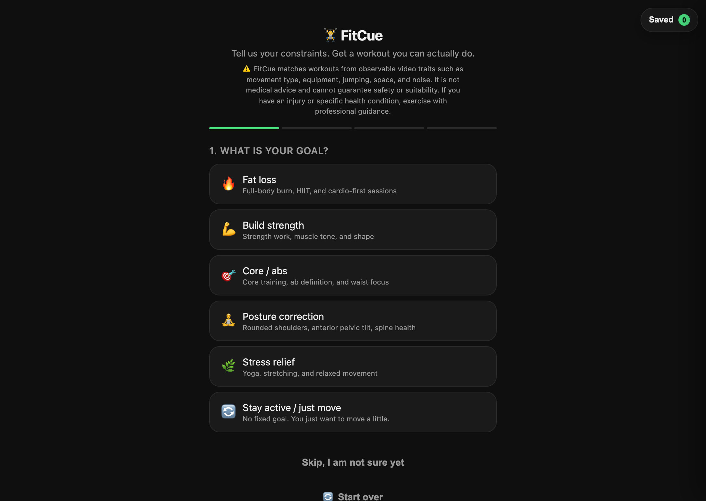

Concept prototype · Constraint-based recommendation
FitCue
A lightweight video-matching product that helps users find feasible workouts based on today's time, space, equipment and physical constraints — not generic recommendations.
Context
Users fail to start because they cannot tell which workout is realistic today. Broad catalogues increase choice without increasing action.
Decision
Narrowed recommendations into constraint-first feasibility matching. Each result answers "can I actually do this right now?" before "is this popular?"
Current stage
Discovery pointed to travellers, new mothers, small-space users and restarters as the sharpest-need segments — underserved by one-size-fits-all fitness products. Next step is live validation with a real cohort.
Product pageConstraint-first matching
